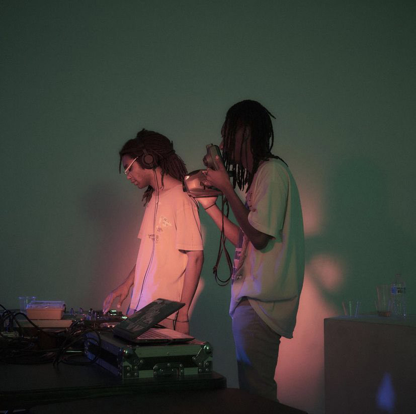

Fly High Dirty Bird!
Dirty Bird (aka Gum) is a North Carolina multi-media artist that specializes in creating uniquely afro-futurist expirecnes through his art. Gum is a producer, DJ, and all around creative whose genres span from house, garage, and electronic, to funk, jazz, and hiphop. Dirty Bird has released a whopping six projects in 2021, and his best is yet to come !
Dirty Bird is especially unique because of his captivating personality. His huge twitter following [@gum_mp3] is almost as impressive as his sound. Many of his fans, including myself, were following for his hilarious tweets far before they knew he was an artist. Speaking of his media presence... check out his dope website gum.computer!

¡AXOLOTES MEXICANOS!
Axolotes Mexicanos, somewhat ironically, are a Spanish pop group based out of Madrid that I have been obsessed with latley. The group offers unique fusion of Spanish and Japanese influences, presenting glittering rock ballads reminiscent of the J-Rock that defines anime soundtracks, while still keeping an indie and almost bedroom aesthetic to their sound and presentation. Axolotes Mexicanos may present themselves as a cute little rock band, but their often-times expliticit content and twisted subject matter makes for a beautifully dark contrast.
The Axolotes Mexicanos' catalog dates back to their 2015 EP, Holi <3 in 2015. My favorite of their releases, however, is their most recent, 2021 album, 3 (:3). Some of my favorite songs of thiers have to be "Gotelé" off :3 and "Double Check" off Salu2. It is always amazing to feel drawn and connected to music that is sung in a language you are not fluent in; to me it is just a testament to the fact that music is truely a universal language.